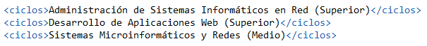
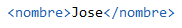
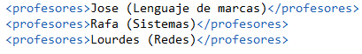
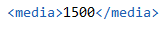
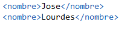
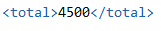
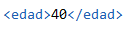
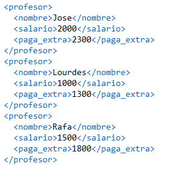
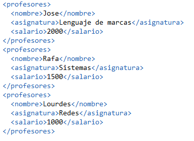
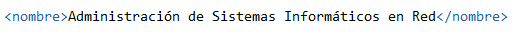

Instituto: Ejercicios resueltos
Download XML
Download DTD
Download XSD
Consulta 1
1. Mostrar el nombre de los ciclos junto al tipo de grado.
for $ciclos in doc ("instituto.xml")/ies/ciclos/ciclo
return {$ciclos/nombre/text()} ({$ciclos/grado/text()})

Consulta 2
2. Mostrar el nombre de los profesores cuyo sueldo sea mayor de 1500.
for $profesor in doc ("instituto.xml")/ies/profesores/profesor
where $profesor/salario > 1500
return $profesor/nombre

Consulta 3
3. Mostrar el nombre de los profesores y la asignatura que imparte.
for $profesores in doc ("instituto.xml")/ies/profesores/profesor
return {$profesores/nombre/text()} ({$profesores/asignatura/text()})

Consulta 4
4. Mostrar la media de los salarios de los profesores.
let $profesores := doc ("instituto.xml")/ies/profesores/profesor
return {avg($profesores/salario)}

Consulta 5
5. Mostrar el nombre de los profesores que tienen ma de 30 años.
for $profesor in doc("instituto.xml")/ies/profesores/profesor
where $profesor/edad > 30
return $profesor/nombre

Consulta 6
6. Muestra la suma de todos los salarios de los profesores.
let $profesores := doc ("instituto.xml")/ies/profesores/profesor
return {sum($profesores/salario)}

Consulta 7
7. Muestra cuantos años tiene el profesor Jose.
for $profesor in doc ("instituto.xml")/ies/profesores/profesor
where $profesor/nombre = "Jose"
return $profesor/edad

Consulta 8
8. Muestra el nombre del los profesores y su salario añadiendole 300€ por pagas extras.
for $profesor in doc ("instituto.xml")/ies/profesores/profesor
order by $profesor/nombre
return
{$profesor/nombre}
{$profesor/salario/text()}
{$profesor/salario + 300}

Consulta 9
9. Mostrar los datos de los profesores exepto su edad.
for $profesores in doc ("instituto.xml")/ies/profesores/profesor
return {$profesores/* except $profesores/edad}

Consulta 10
10. Mostrar los ciclos que tengan un año de decreto mayor que 2009.
for $ciclos in doc ("instituto.xml")/ies/ciclos/ciclo
where $ciclos/decretoTitulo/@año = "2009"
return $ciclos/nombre
